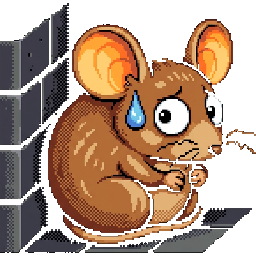
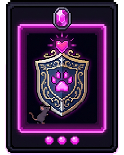

The Cat at the Door
There's a knock. You are a mouse. On the other side is a very large, very polite cat.
Use → (or Next) to advance and to reveal points one at a time. F = fullscreen.

The Question
The cat smiles. "Good evening. I am simply famished. Could you tell me: where are the other mice hiding?"
- Your friends are crammed behind the wall, holding their breath.
- Tell the truth, and they're dinner.
- So, do you lie to the cat?
- A utilitarian mouse would just run the numbers. Tonight you meet a philosopher who says the numbers are beside the point.
Before the Trial
Five quick gut-checks, with no right answers. Just say where you stand. We will come back to them once the dream is over.
 Immanuel Kant · 1724–1804
Immanuel Kant · 1724–1804
It's Not About Results
Kant breaks sharply with the utilitarians. For him the only thing good without qualification is a good will: a will that acts because something is right, not because of how it turns out.
Morality, then, is about acting from duty. Consequences do not decide what is right, not even saving your friends. The principle behind your act does.
Why You Do It Matters
Kant draws a sharp line between two motives that can produce the very same action.
You protect your friends because you recognize protecting them as the right thing to do.
This has genuine moral worth for Kant. It would hold even if you did not feel like it.
You protect them only because you love them and it feels good.
Kind and lovely, but Kant says it carries no distinctively moral worth on its own.
Every Act Has a Maxim
To judge an action, Kant says, look at its maxim: the personal principle you would be acting on.
- Not "I'm scared," but the rule: "I will lie whenever a lie spares someone harm."
- The maxim is what gets tested, and the test is the same for every rational being.
- So the real question isn't "what happens if I lie?" but "what am I willing to make a law for everyone?"
Two Kinds of "Ought"
Commands come in two flavors. Only one is the home of morality.
Commands a means to an end you happen to want.
"If you want to stay safe, keep quiet." Drop the want, and the command vanishes.
Commands unconditionally. It binds any rational being, wants or no wants.
"Do not lie." No "if." This, Kant says, is the form of a genuine moral law.
Spot the Categorical
Formulation 1: Universal Law
The categorical imperative has one core, stated several ways. The first:
"Act only according to that maxim whereby you can at the same time will that it should become a universal law."
In short: could you will that everyone act on your maxim? If universalizing it breaks something, it fails.
Run the Machine
Feed a maxim into the Universalizer. It imagines a world where everyone acts on it, then reports what happens.
So What About the Cat?
Now run your own maxim through the same test: "I will lie whenever a lie spares someone harm."
- Imagine everyone lies whenever they judge it helpful.
- Then a spoken assertion carries no weight, because nobody believes anyone.
- But your lie only works because the cat expects the truth. Universalized, it undercuts itself.
- On the Formula of Universal Law, then, the lie cannot pass. Hold that thought, because the modern Kantians will push back.
Two Ways a Maxim Can Fail
The machine flagged two different failures, and the difference between them defines two kinds of duty.
Universalizing the maxim makes it self-destruct (lying, false promises).
Yields a perfect duty: strict, with no exceptions. Do not lie.
You can picture the world, but couldn't rationally will it (no one ever helps).
Yields an imperfect duty: real, but you choose how and when. Help others sometimes.
Say It Back
Complete the first formulation and the duty it yields.
Formulation 2: Humanity
Kant says the same law can be put a second way, in terms of respect for persons:
"Act so that you treat humanity, whether in your own person or in that of another, never merely as a means, but always at the same time as an end."
- Using someone as a means is fine. You use the cat for directions all the time.
- The wrong is using them as a mere means, going around their rational agency instead of through it.
- Deception does exactly that: a lie manipulates the cat with information he can't rationally evaluate.
Why Lying Offends the Second Formula
Formulation 3: The Kingdom of Ends
The third formulation pictures the moral community the first two imply:
- Act as if you were a co-legislator of universal laws in a community of rational beings.
- Each member is both author of the laws and bound by them, and each is an end in themselves.
- Ask: could every rational being, the cat included, live under the law you're proposing to act on?
Sort the Formulations
Who Gets to Be an "End"?
Kant's respect is owed to a specific class. He calls them persons: rational beings capable of setting their own ends and acting on reasons.
- Such beings have dignity rather than a price. They cannot be traded off or used up.
- That's exactly why deception and coercion are so serious: they override a rational will.
- In our cartoon the mouse and the cat both talk and reason, so both qualify as persons.
The Twist: Real Animals
Here's where Kant's own view bites. He held that animals are not ends in themselves, because they aren't rational agents.
- So we have no direct duties to them, only indirect ones. He says this in his Lectures on Ethics.
- Cruelty to animals is wrong, he argued, because it hardens us and corrodes how we treat fellow humans.
- The sting: by Kant's real standard, a literal mouse wouldn't count at all. Only our reasoning, talking cartoon mouse does.
Kant on a Real Animal
"On a Supposed Right to Lie" · 1797
Kant Bites the Bullet
This case is really Kant's. The writer Benjamin Constant objected: surely you may lie to a murderer who asks where your friend is hiding.
- Kant's reply: no. Truthfulness is an unconditional duty; you may not lie even here.
- His reasoning: you answer for your own lie, but not for what the murderer freely chooses to do with the truth.
- Tell the truth and harm follows? That's on the murderer. Lie and anything goes wrong? That's on you.
- Many readers find this conclusion deeply troubling. It is the door the modern Kantians walk through.
What Does Kant Actually Say?
Decision Point: The Cat Is Still at the Door
Not graded. The question the whole lesson opens with, now that you know what Kant answers.
Keep the Framework, Lose the Verdict?
Later Kantians admire the apparatus of universal law, dignity and ends in themselves. They think Kant misapplied it at the door. Two of the most important:
- Christine Korsgaard: on lying to evildoers, and on who counts.
- Onora O'Neill: on deception and coercion as the core wrongs.

Korsgaard: Dealing With Evil
In "The Right to Lie: Kant on Dealing with Evil" (1986), Korsgaard argues Kant's own test, applied honestly to the situation, gives a different answer.
Truthfulness is unconditional. Even to the cat, you may not lie (the 1797 essay).
You answer for your lie; what the cat does with the truth is his affair.
Ideal rules assume everyone complies. The cat does not comply. He is using coercion to do murder.
A maxim like "deceive a deceiver to thwart violence" can be universalized; you needn't cooperate with his evil. The Universal Law formula can permit the lie.
O'Neill: Deception & Coercion
Onora O'Neill builds her Kantian ethics around the Formula of Humanity, read through one practical test: could those affected actually consent to what you're doing?
- The two clearest ways to treat someone as a mere means are deception and coercion. Both make genuine consent impossible.
- Real moral principles are ones everyone could adopt and act on together.
- Apply it at the door: the cat is trying to coerce and exploit you; the hidden mice can't consent to being handed over. Whose agency are you really required to respect?
O'Neill gives you the test; she leaves you to weigh the case honestly with it.
And the Real Mouse?
Korsgaard also reopens "who counts." In Fellow Creatures (2018) she argues Kant got animals wrong.
Animals aren't rational, so they're not ends in themselves. We owe them only indirect duties.
A real mouse at your door? On Kant's view, no standing of its own.
Creatures for whom things can be good or bad are ends in themselves too, so we owe them direct duties.
The real mouse counts in its own right. So, for that matter, would the cat.
Decision Point: Is That Still Kant?
Not graded, and it is a question about how philosophy works as much as about animals.
Stay Kantian
Revisit Your Instincts
Here is where you started, before the trial. Re-rate each one and see whether anything has shifted. Staying put is fine; the question is whether you can now say why.
The Mouse Decides
The cat is still waiting. Now you have more than a gut feeling. You have a framework.
- Kant: act only on maxims you could universalize, and treat every rational being as an end, never a mere means.
- Kant's hard line: truthfulness is unconditional. Even here, do not lie.
- Korsgaard: dealing with evil is different, and you need not cooperate with a coercer. Real animals count too.
- O'Neill: the deep wrongs are deception and coercion, so ask who could really consent.
Visit every slide, answer every question correctly, and submit both belief probes to fill the bar and finally answer the cat.